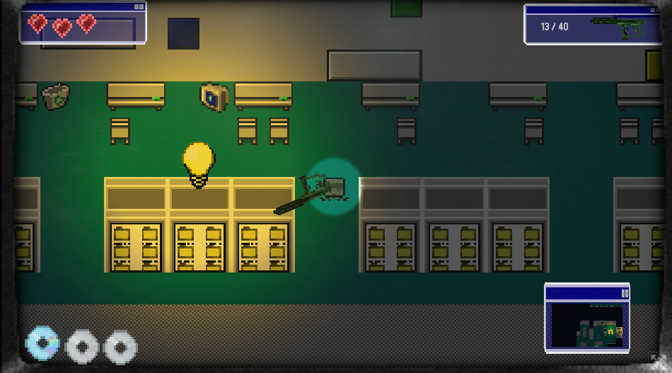
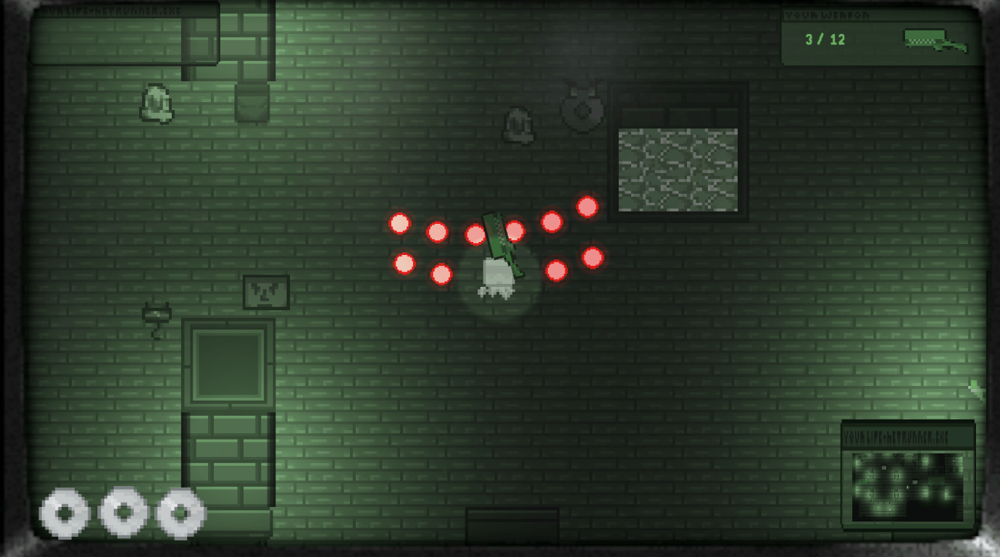

Overview
Protocol: Shutdown was a short internet based top down shooter made as part of Brackey's Gamejam 2025.2. Protocl:Shutdown was made in collaboration with developers Bradley Curtis and Keisha Byrne. It features the main character transporting their consciousness into a computer system in order to save these retro systems from being consumed by a virus that will render them unusable and lost media. The game was made in just under seven days with heavy programming from Bradley Curtis.
Gameplay
The game uses a twin-stick shooter style as you traverse through two levels attempting to find three CD's that contain parts of the system's hardware data. You'll find loot barrels scattered around which house guns for you to use as you fight the onslaught of enemies attempting to kill you. As you fight against these viruses you'll eventually make it to an end, where you can save the system and move onto the next. The game also features a unique weapon system where you can only hold one weapon at once, though discarding a weapon will use it's special ability and allow you to pick up a new one.


Development Process
Developed in just seven days, Protocol:Shutdown was a unique challenge as myself and my other two developers worked to navigate and create something fun and interesting with such a small team and a small time frame. Bradley Curtis is responsible for a large majority of the game's programming as he created the weapons, the movement, the enemy AI and various other features. I primarily focused on creating assets for the game and assisted with more minor programming parts if need be, such as reworking a few enemy AI scripts and implementing boss enemies alongside a few other smaller features like the UI and picking up mechanics.
Skills Demonstrated
- Unity scene creation and map designing
- Lighting, color design, and shader-based effects
- 2D graphics art and design
- Sound and ambient design
- Teamwork under a time constraint